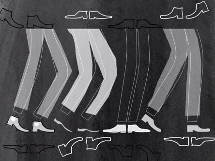
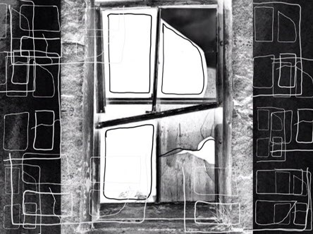
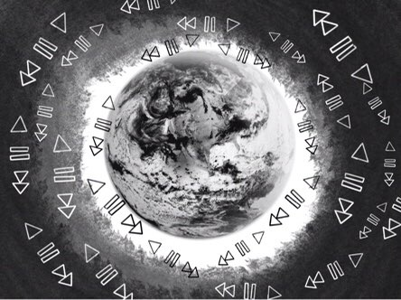

Кроками,
Кроками, що
ні на одну хвилину
не наближають нас
до бажаної цілі.
Кроками,
що відводять
нас у грані, що
дають нам рамки, що
обмежують нас у виборі.
Кроками
кроками, що
зводять нас
в обмежені стани
в думки, що у рамках
стоять як картини,
що вийти не можуть
з своїх кайдан.
Тихими,
Тихими криками
душі, не змобованих
рвуться у світ.
Думки їх скажені,
що хочуть прав
у головах нещасливих
аби очистити розум їх
від загальних
тих установок соціуму
та впливу його на чистоту
Довгими
Довгими гудками
в телфонах закоханих
живе сум, що
з’їдає сущності їх
та ставить слід на серці
та його
душевних відгалуження
Кожен
Кожен знайде
в собі сили
сили, на те, щоб у голови
вкласти не заводські установки
мертвого роду,
а в голові народжені
твоїй думки.
Думку.
Думку, що мала б
стати життєвой позицією,
а стала лиш сумнівом
і думкой, постидних
меншин того розуму,
що мораль виключає
та думає лиш про думку оточення.

Мені так хочеться кричати,
Розбити вщент всі шибки вікон.
І невгамовно сперечатись.
Сам із собою ніби схибив.
Я певно бачу перешкоди
У розумінні мого світу.
І кожен сіє зерна правди,
що проростають напівзрілі.
Я так любив твоє зітхання,
Тихенький хохот біля вікон,
де люди мали сподівання,
Що захист їх, у товстих тінях.
Я вже не буду сперечатись.
Той люд, напевне, не загине,
Без довгомірних звинувачень,
У днях моїх бездонних криків.

Швидкісна траса.
Вказана швидкість забороняє робити зупинки,
навіть якщо очі поволі закриваються,
а серце перестає битись
Летиш найвищими швидкостями,
без зупинок, вихідних, відпусток,
Роками по одній дорозі, з різними краєвидами,
що вже давно перестали бути цікавими
Кожен кілометр стає мертвою нервовою
клітиною — вибудовується кладовище мрій
Не поставиш стоп, не зупиниш події,
що почали відбуватись,
не зможеш попросити світ зачекати
Це сніжний ком, що котиться згори,
набираючи кожної секунди по сантиметру
з кожної сторони на замучену душу
Створені рости, накоплюючи всередині досвід,
приречені жити не забуваючи минулих подій,
живучи з ними впродовж всього шляху,
де вказана швидкість забороняє робити зупинки,
відпустки і вихідні ...

Пірнувши в глибину
Я не зауважувала, що підписані бумаги були невірні
Вони запитували про хвороби серця, судин,
кінцівок, але як завжди забули про душу
Пірнувши, наблизившись до дна
Фізичний стан тіла став схожим на душевний
Я знову на глибині, тільки тепер морського дна
Пірнувши, я боялась підняти голову,
аби не побачити над головою з десяток метрів
Моє тіло реагувало на фізичну загрозу,
і мозок забороняв дивитись на глибину занурення
Пірнувши, я не думала, що наближусь до глибини своєї душі,
зрозумівши як далеко я занурилась до твоєї
Пірнувши, в твої настрої,
я не ставила відмітку в документах по інструктажу,
і моє тіло не давало мені знати про інсктинкт самозбереження,
Моє тіло відпустило душу гуляти до твоєї,
і не турбувалось, що вона не повернеться
Пірнувши, я зацепилася за невидимий якір,
і сиділа на дні повторюючи,
що я дома, моя душа на місці,
і життя кружляє птахою у вільному безхмарному небі
Пірнувши, я не знайшла виходу додому,
Бо єдиним домом був мій внутрішній світ,
в якому ти оселився, захопивши все,
проростаючи як омела росте на деревах,
забувши про те, що ти давно живеш на глибинах іншої душі,
і довгий час не забиратимеш своє коріння,
що роками обплітало домівку
Пірнувши, я боюсь
не дістатись до повітря.
не побачити більше синього неба.
і не стати ногами на сушу.
Я поволі забуваю дихати,
і можливо на днях мені
не стане повітря,
бо з кожним днем кисню
все менше,
як і резервних сил в мені.
Знаєш те відчуття,
Коли люди як пазли?
Ніби дві людини,
Що живуть одним вогнем.
(Дивне відчуття, що не кожен відчує на собі. )
Хмм..це так дивно,
Коли один вже не має свого болю
Коли радість ділять на двох.
Ніби хтось примусово,
зробив з тебе плюс,
Що притянув до тебе
Твою половину .
Людина.
Людина не та,
Що є цільним шматком
Людина та,
Що в своєму серці
Завжди має місце,
Що пожиттєво береже
Для когось..
Для того, хто
Заповнить пустоти твого буття.
Ахх... те відчуття,
коли твоє життя вже не належить тобі.
Коли постійною пропискою,
Твою душу заполонила,
Та радість,
Що так уміло взяла тебе в полон.
Та своїми руками,
Охопила всю твою суть.
Історія кожного такого,
"Цільного "-особлива.
Як сніжинки, що здаються нам,
Лиш малими крихтами,
Історії людей, що знайшли "своє",
Здаються соціуму стандартом.
Але ж ні..
Відстань.. рамки.. гендери ..
Все , що може стати бар'єром
Та перекрити тобі дихання.
Історія кожної пари ,
Має свої особливості,
Не видимі звичайним людям.
Та не дивлячись на це,
З кожним роком
Все більше пазлів складаються
Та творять нові пазли,
Для нової історії..
Для нового вогню.